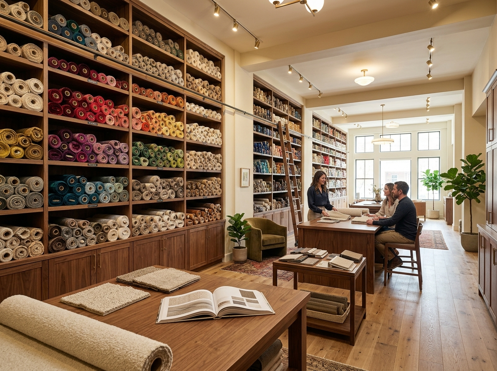
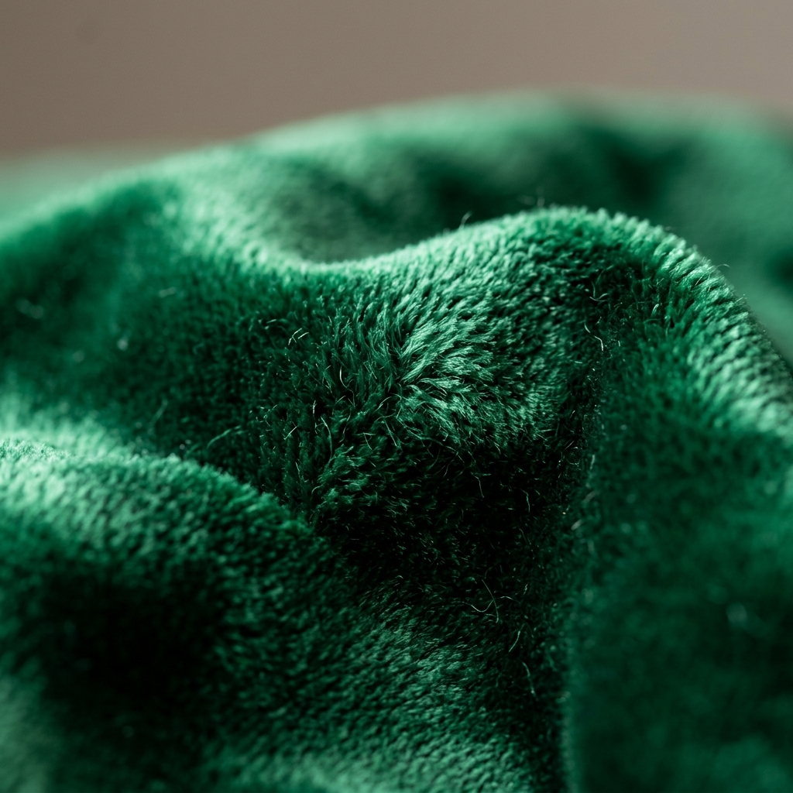

Heritage
The Heritage Collection
Inspired by the great English country house — velvets, tapestries, and wools in rich jewel tones and classic neutrals, perfect for antique and traditional pieces.
38 fabrics
From opulent Italian velvets to breathable Belgian linens, our seasonally updated fabric library gives you the freedom to create exactly the look you envision.
Filter by category to find the fabric that suits your furniture, lifestyle, and aesthetic perfectly.

Rich pile — 380 GSM
Rub test: 80,000 cycles

Rich pile — 380 GSM
Rub test: 80,000 cycles

Rich pile — 380 GSM
Rub test: 80,000 cycles

Rich pile — 380 GSM
Rub test: 80,000 cycles

Medium weight — 260 GSM
Rub test: 35,000 cycles

Medium weight — 260 GSM
Rub test: 35,000 cycles

Medium weight — 260 GSM
Rub test: 35,000 cycles

1.2–1.4mm — Italian tannery
30-year durability

1.2–1.4mm — Semi-aniline
30-year durability

1.0–1.2mm — Nappa grade
Butter-soft finish

Looped weave — 420 GSM
Rub test: 50,000 cycles

Looped weave — 420 GSM
Rub test: 50,000 cycles

Wool-cotton blend — 320 GSM
Rub test: 45,000 cycles

Heavyweight — 280 GSM
Rub test: 40,000 cycles

Stain & pet resistant
Rub test: 100,000 cycles

Stain & pet resistant
Rub test: 100,000 cycles
Three standout ranges from our current library, each designed around a distinct interior philosophy.
Inspired by the great English country house — velvets, tapestries, and wools in rich jewel tones and classic neutrals, perfect for antique and traditional pieces.
38 fabrics
Understated textures and refined earth tones for modern interiors. Bouclés, performance weaves, and linen blends that look effortlessly current.
52 fabrics
Ultra-premium Italian silk velvets, full-grain leathers, and handwoven textiles for the most discerning interiors and statement statement pieces.
24 fabricsOur concise guide to choosing the right fabric based on your household needs and lifestyle.
| Fabric Type | Durability | Pet Friendly | Child Friendly | Easy Clean | Best For |
|---|---|---|---|---|---|
| Velvet | Accent chairs, formal sofas | ||||
| Linen | Dining chairs, headboards | ||||
| Leather | Family sofas, home offices | ||||
| Boucle | Accent chairs, headboards | ||||
| Performance | Family rooms, commercial | ||||
| Cotton / Tweed | Dining, traditional pieces |

We believe beautiful upholstery should not come at the cost of the environment. That is why we stock a growing range of certified sustainable fabrics — from GOTS-certified organic cottons to recycled polyester performance fabrics and naturally tanned leathers.
Proper care extends the life of your upholstery by decades. Our simple, expert-curated tips for every fabric type.
Brush regularly with a soft velvet brush in the direction of the pile. Blot spills immediately — never rub. Steam lightly to restore crushed areas. Avoid direct sunlight to prevent fading.
Vacuum weekly with the upholstery attachment. Spot clean with a mild detergent and cold water. Pre-treat stains immediately. Professional dry-cleaning is recommended for deep cleaning.
Wipe with a damp cloth monthly. Condition with a quality leather conditioner every 6–12 months to prevent cracking. Avoid harsh cleaners and prolonged exposure to direct sunlight.
Use a lint roller regularly. Blot spills immediately with a clean white cloth. Avoid abrasive cleaning tools that can pull the loops. Keep away from pets to prevent snagging.

Cannot decide from photos alone? We will send up to 5 fabric samples directly to your door at no cost. Simply fill in the form below and choose your categories of interest.
Once you have chosen your fabric — or if you need guidance — our artisans are ready to bring your vision to life. Contact us to start your project today.